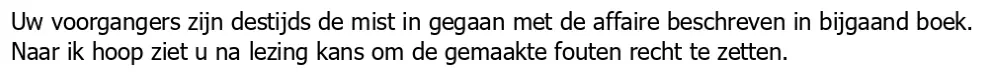

Prueba · Carta
Giltay a la ministra de Defensa, con la tercera edición revisada, 26 de abril de 2022
El pasaje
«Sus predecesores se equivocaron en su momento en el caso descrito en el libro adjunto. Espero que, tras su lectura, encuentre usted la manera de subsanar los errores cometidos». Página 1, el texto de la carta, que consta de dos frases. Traducido del neerlandés; el texto original figura a continuación.
Texto original
“Uw voorgangers zijn destijds de mist in gegaan met de affaire beschreven in bijgaand boek. Naar ik hoop ziet u na lezing kans om de gemaakte fouten recht te zetten.” La expresión neerlandesa «de mist in gegaan» (literalmente, haberse metido en la niebla) significa haberse equivocado; la traducción recoge el sentido y no la imagen. La línea de asunto pone el ordinal en superíndice: «3e herziene druk» (tercera edición revisada).

Por qué importa este documento
Con esta carta del 26 de abril de 2022, Giltay entregó en persona la tercera edición revisada del libro, dirigida a la ministra de Defensa, Kajsa Ollongren. En dos frases escribió que sus predecesores «se equivocaron» en su momento en el caso que describe el libro, y que esperaba que la ministra subsanara los errores cometidos. El ensayo enumera siete momentos, en tres ministerios, en los que el Estado guardó silencio sin invocar un secreto de Estado, y concluye que ese silencio no es un secreto impuesto por la ley, sino una elección. Esta carta es posterior a esos siete momentos. De Defensa, sostiene el ensayo, no llegó ninguna respuesta.
Procedencia
- Documento
- Carta de acompañamiento, una página
- Remitente
- Edwin Giltay, autor, La Haya
- Destinataria
- La ministra Kajsa Ollongren, Ministerio de Defensa, Plein 4, 2511 CR Den Haag (La Haya)
- Fecha
- La Haya, 26 de abril de 2022
- Entrega
- Con el encabezamiento «in persoon afgegeven» (entregado en persona)
- Asunto
- «3e herziene druk De doofpotgeneraal» (tercera edición revisada de De doofpotgeneraal)
- Anexo
- El propio libro. La carta habla de «bijgaand boek» (el libro adjunto); no figura una lista de anexos aparte
- Firmado
- «Met vriendelijke groet, Edwin Giltay, Auteur» (Atentamente, Edwin Giltay, autor). La firma manuscrita está tachada en la imagen escaneada
- Idioma
- Neerlandés
- Conservado por
- Archivo del autor
Citado en: el ensayo «La prohibición cayó, el libro quedó en pie» en el capítulo (7) «Ninguna respuesta sobre el fondo».
Ficha de prueba: https://
Documento: https://
Modificado por última vez el 13 de septiembre de 2026, consultado el 27 de noviembre de 2026.

Esta página es una ficha de prueba del libro El general del encubrimiento de Edwin Giltay y del sitio web que lo acompaña.